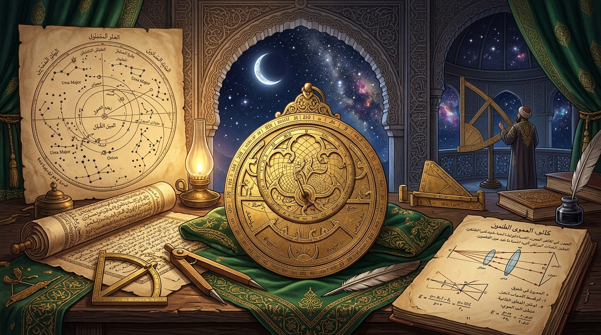
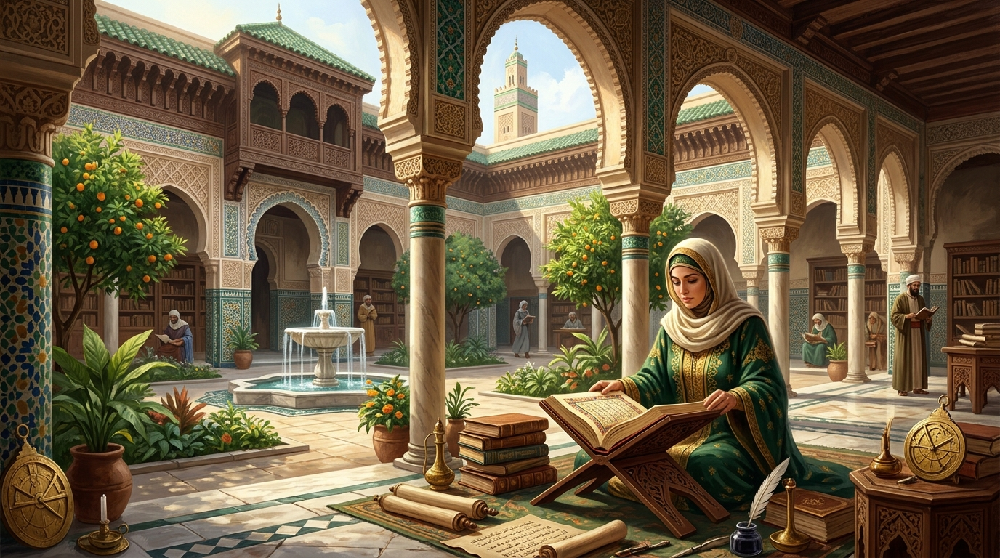

ইনফোগ্রাফিক: দুঃখ ও পরীক্ষার ৫টি আধ্যাত্মিক দিক
১. আত্মিক পরিশুদ্ধি, ২. চরিত্রের দৃঢ়তা, ৩. স্বাধীন ইচ্ছার মূল্য, ৪. সহমর্মিতার বিকাশ এবং ৫. অনন্ত পুরস্কার।
সহীহ বুখারী ৫৬৪১
ইনফোগ্রাফিক দেখুন →
কুরআন, সহীহ হাদিস, শাস্ত্রীয় তাফসীর ও প্রামাণ্য ইতিহাসের আলোকে মৌলিক বিশ্বাস, সৃষ্টিতত্ত্ব ও সমকালীন বিভ্রান্তির প্রামাণ্য সমাধান ও বুদ্ধিবৃত্তিক সৌন্দর্য অন্বেষণ করুন।
বিশুদ্ধ দলিল ও তথ্যের নির্ভরযোগ্য উন্মুক্ত আর্কাইভ
জটিল ইসলামিক দর্শন, বিজ্ঞান ও আইনি অধিকারসমূহকে স্পষ্ট ভিজ্যুয়াল চার্ট এবং সরাসরি যাচাইযোগ্য তথ্যসূত্রের মাধ্যমে বুঝুন।
১. আত্মিক পরিশুদ্ধি, ২. চরিত্রের দৃঢ়তা, ৩. স্বাধীন ইচ্ছার মূল্য, ৪. সহমর্মিতার বিকাশ এবং ৫. অনন্ত পুরস্কার।

মহাবিশ্বের উৎপত্তি, সম্প্রসারণ, জীবনের মূল উপাদান পানি এবং ইসলামি স্বর্ণযুগের পরীক্ষামূলক বিজ্ঞানের ভিত্তি।

জাহেলিয়াতের প্রথা বনাম ১৪০০ বছর পূর্বে ইসলাম প্রদত্ত সম্পত্তির স্বাধীন মালিকানা, বিবাহে সম্মতি ও শতভাগ ভরণপোষণ।
"Allah - there is no deity except Him, the Ever-Living, the Sustainer of all existence. Neither drowsiness overtakes Him nor sleep."
"আল্লাহ, তিনি ব্যতীত কোনো সত্য উপাস্য নেই; তিনি চিরঞ্জীব, সবকিছুর ধারক। তন্দ্রা বা নিদ্রা তাঁকে স্পর্শ করে না।"
"Verily, Allah does not look at your outward appearances or your wealth, but rather He looks at your hearts and your deeds."
"নিশ্চয়ই আল্লাহ তোমাদের বাহ্যিক চেহারা বা ধন-সম্পদের দিকে তাকান না; বরং তিনি তাকান তোমাদের অন্তর এবং কর্মের দিকে।"
In Islamic theology, earthly existence is intentionally designed as an arena of moral trial (Bala'), not eternal paradise. Suffering cultivates resilience, tests gratitude, cleanses transgressions, and elevates spiritual rank in an eternal paradigm.
Islamic theology fundamentally encourages rigorous empirical observation of the cosmos as a primary form of worship and contemplation (Tafakkur). During the Islamic Golden Age, science and faith flourished in harmony.
Fourteen centuries ago, Islam revolutionized women's rights by establishing independent financial ownership, inheritance, legal consent in marriage, the right to divorce, and spiritual equality before God.
Dive deep into structured domains ranging from Quranic sciences and prophetic traditions to Islamic philosophy and ethics.
Explore linguistic beauty, context of revelation, and classical commentaries.
Examine verified sayings, legal traditions, and authentic chains of transmission.
Understanding Tawhid, divine attributes, destiny, and foundational creed.
From the Prophetic era and Caliphates to the Islamic Golden Age.
Empirical observation, cosmic harmony, and Islamic contributions to science.
Spiritual status, financial rights, historical scholarship, and family justice.
The purpose of life, free will, suffering, and existential questions.
Addressing persistent stereotypes and misconceptions with primary texts.
Challenge yourself across Beginner, Intermediate, and Advanced tiers. Learn the authentic evidence and scholarly references behind every question.
Ask complex questions and receive cross-referenced insights drawn from the Quran, Kutub al-Sittah Hadiths, and classical Tafsir with source citations.
Receive authentic, well-researched Islamic articles, weekly Quranic gems, and historical analyses directly in your inbox. No spam, ever.